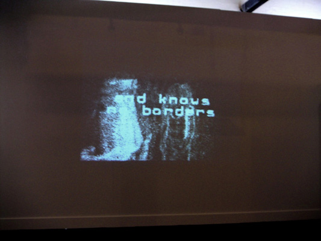
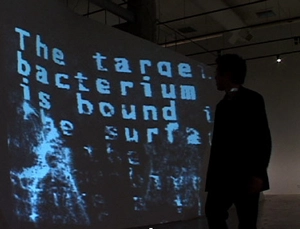

Balkan Ghosts captures the images of the viewers and elaborates them in real time, fragmenting the human shapes and merging them with text that narrates the tragic destiny of Balkanise populations, almost turning the spectators into the “Balkan Ghosts” themselves. This artwork indicates the new directions younger artists were moving in after a decade of war and dissolution that the Balkans faced. Those directions contemplate more constructive approaches and creations of new utopias within a contemporary hi-tech information society. The work was featured in The Art of the Mediterranean, Museum of Contemporary Art (MACRO), Rome, Italy, June 19th - September 1st, 2004.
 